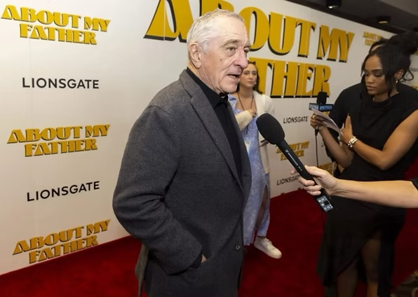
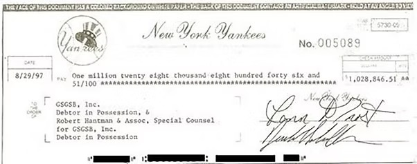
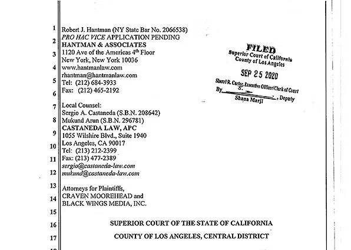
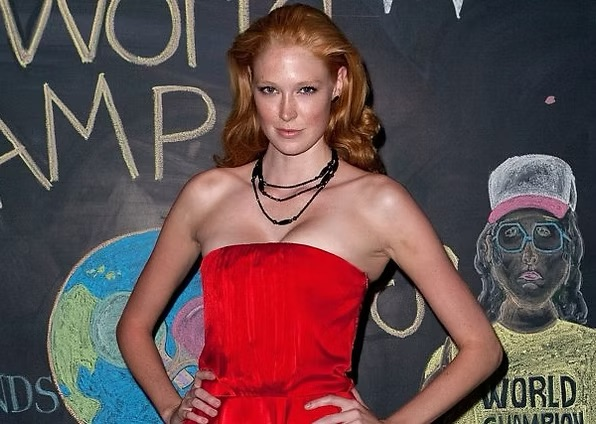
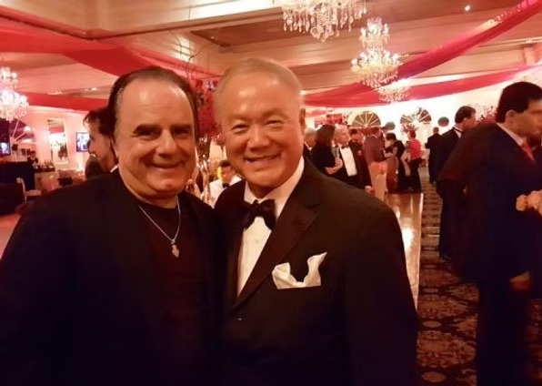
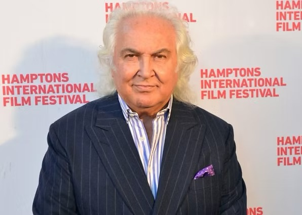
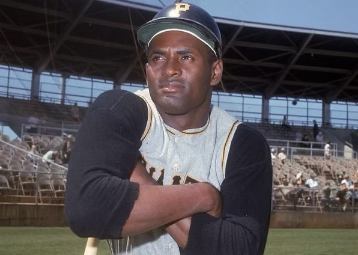

A small selection of recent and notable mentions.

Robert De Niro let his hair down to play Sebastian Maniscalco’s hairdresser father in ‘About My Father’
"De Niro lets his hair down “About My Father” is about funnyman Sebastian Maniscalco’s hairdresser father. Their friend Robert De Niro plays him. De Niro: “I was in ‘The Irishman’ with Sebastian. This is a personal element from his life. A classic Italian family comedy cultural clash with WASPy stiff in-laws. His actual father was my model. I always want a real element in anyone I play. We met in Oklahoma while shooting a movie. “Actors I admired included Gregory Peck and James Dean who only did three movies but was excellent. I never worked with Montgomery Clift. Brando, always great, I knew personally. I worked with terrific Robert Mitchum twice.” In this is Kim Cattrall. Opens May 26. Go. Take your father. Maybe he’ll do your hair."

Lawsuit Tries Boss’ Memory
Yankee owner George Steinbrenner came down with a persistent case of memory loss yesterday trying to dodge a $1 million lawsuit over unpaid bills on blueprints for Yankee Stadium luxury boxes. A Pennsylvania firm, GSGSB Inc., filed suit charging the Yankees hired it in 1984 to design luxury boxes and a restaurant for well-heeled fans.
SRC CONSTRUCTION CORP. OF MONROE, Plaintiff, v. ATLANTIC CITY HOUSING AUTHORITY, Defendant.
APPEARANCES: HANTMAN & ASSOCIATES By: Robert J. Hantman, Esq. 358 Fifth Avenue, Suite 1003 New York, New York 10001 Counsel for Plaintiff SRC Construction Corp. of Monroe PARKER McCAY P.A. By: Richard W. Hunt, Esq.; Dana B. Ostrovsky, Esq. 9000 Midlantic Drive, Suite 300 Marlton, New Jersey 08054 Counsel for Defendant Atlantic City Housing Authority
Porn director files $10M defamation suit against starlet accusing him of assault
A porn director, Craven Moorehead, has filed a $10 million defamation suit against an adult film star, Aria Lee, who accused him of sexual assault. In June, up-and-coming porn performer Lee alleged in a video posted to Twitter — and subsequently in an interview with porn trade Adult Video News — that she was sexually assaulted by Moorehead twice last year.

Craven Moorehead Seeks to ‘Clear His Name,’ Files Defamation Lawsuit Against Aria Lee
Director and producer Craven Moorehead has filed a $10 million civil lawsuit for defamation against model Aria Lee over sexual assault allegations made against him by Lee back in June. The lawsuit, filed a few days ago, was first reported yesterday by the New York Post’s Page Six and XBIZ has since been able to view the full complaint.
Moorehead v. Aria Lee Complaint
Moorehead v. Aria Lee Complaint PDF - Details in document.
Al B. Sure! sends cease-and-desist to Amazon, author of ‘fake’ Kim Porter book that claims he had sex with Diddy
Amazon and the mysterious publisher of a sketchy book claiming to be the late Kim Porter’s memoir have been sent a cease-and-desist letter from Porter’s ex, singer Al B Sure! The left-field best-seller claims the “Nite and Day” singer — born Albert Joseph Brown III — engaged in sexual relations with Porter and another of her exes, Sean “Diddy” Combs. Sure! is now trying to block the tome’s sale.
It’s the end of the line for Eric Adams’ ‘unconstitutional’ NYC migrant bus suit, judge rules
It’s the end of the line for Mayor Eric Adams’ $700 million lawsuit against bus companies that have hauled more than 33,000 migrants to the Big Apple, according to a Manhattan judge who denied the city’s request for a preliminary injunction and called the case “dubious at best.” The suit, filed in January against 17 bus companies that ferried folks from Texas to New York City, was deemed “unconstitutional” by Manhattan Supreme Court Judge Mary Rosado.
Former worker for One Taste ‘orgasm cult’ claims lawyer wanted her to ‘assume’ victim role in new lawsuit
A former facilitator for embattled “orgasm cult” One Taste claims her attorney tried to “manipulate” her “to assume the role of a crime victim” amid a federal probe of the company, she said in a lawsuit. Alisha Price believes lawyer Neil Glazer ignored her belief that nothing criminal had gone on at the Californa-based sexual wellness company, which claims to teach “orgasmic meditation” in which women have their genitals stroked for 15 minutes.

Famed Friars Club at center of yet another legal battle with former exec director
The endless legal troubles of the Friars Club are raging on — with former boss Michael Gyure filing a new suit against board members over what he claims was “a frivolous and vindictive” suit filed against him last year. The papers are about as entertaining as a Borscht Belt routine.
Major detail in Rockets’ Kevin Porter Jr. assault case is wrong: source
FIRST ON FOX: Houston Rockets guard Kevin Porter Jr. is accused of attacking girlfriend Kysre Gondrezick in a New York City hotel room earlier this week, but her attorney told Fox News Digital the allegations aren't accurate. "Statements that were attributed to her were not her words," said Gondrezick's lawyer, Robert Hantman, referring to a criminal complaint. "She says he didn’t strike her repeatedly. He’s a big guy. If he hit her repeatedly, she’d have a broken jaw."
The Indispensable Man: How Giuliani Led Trump to the Brink of Impeachment
Not so long ago, it seemed to Rudolph W. Giuliani that he would be presiding over a hefty part of the world. Holding court a few nights after the 2016 election in a private cigar bar on Fifth Avenue, glass of Macallan at hand, Mr. Giuliani boasted to friends that President-elect Donald J. Trump would soon nominate him to the most prestigious of cabinet posts.

Rudy Giuliani’s Ukraine smear case started with splashy Hollywood deal gone bad — and a cameo from Jack Nicholson
A Hollywood deal that went sideways gave federal investigators clues to unravel the explosive scheme to dig up dirt on Joe Biden in Ukraine — a plot that could land America’s Mayor behind bars. Lev Parnas, one of Rudy Giuliani’s shady Soviet emigre partners in an alleged scheme to boost President Trump’s reelection, also once scammed a friend out of $350,000 that he claimed was a loan to help fund a proposed flick called “Memory of a Killer,” a Long Island federal judge ruled.
Russian Oligarchs Caught in Love Triangle Are Fighting Over Miami Villa
Two Russian oligarchs — in a love triangle with the same woman — are fighting over a townhouse in Miami. New York lawyer Robert Hantman is trying to stop the property from being transferred to Yulia Drynkina, the ex-girlfriend of his client, Sergei Polonsky, and mother of three of his children, who is reported to be in a relationship with his former business partner Roman Trotsenko.
New York museums call for $100m lawsuit to be dismissed
Earlier this year, artist Robert Cenedella filed a federal class action lawsuit against five major American institutions alleging manipulation of the art market. Now, five New York Museums, which Cenedella has accused of being part of a ‘corporate museum cartel’ that only promotes artists within their own collections, are seeking a court dismissal of the case.
Victoria’s Secret model Sui He returns to New York Model Management, avoids lawsuit
It’s no longer a case of He said, she said. A $1 million lawsuit against Victoria’s Secret model Sui He has been dropped. The pioneering Chinese model, who tried making the jump from New York Model Management to Women Management shortly before fall Fashion Week, has returned to her original agency. That agency in turn has agreed to drop their lawsuit against the 27-year-old Wenzhou native.

Victoria’s Secret model Sui He is sued as she prepares to open runway show for Ralph Lauren in Fashion Week
Sui He is being sued. The stunning Victoria's Secret runway beauty, who is also known for her 2011 turn as the first East Asian model to open a runway show for Ralph Lauren, has been accused of dumping her agency to join a rival.

Cops find gun while responding to model, boyfriend fight
A model who has advocated for the rights of underage catwalkers was busted this month with her beau for gun possession inside their West Village pad, The Post has learned. Cops were called to the apartment on Bleecker Street after Alise Shoemaker, 30, allegedly attacked her software-developer boyfriend, Christopher Lattner, 32, “jump[ing] on his back and scratch[ing] his neck, causing abrasions, bleeding lacerations, redness, and substantial pain,” according to a criminal complaint.
Bogus Bloomberg is a big name in $1M lawsuit over club fight
He mayor may not be a Bloomberg, but he’s going to court. Real estate broker Dan S. Neiditch, who allegedly chooses the more famous surname of Bloomberg when making reservations at top nightclubs, is being sued by a club employee for $1 million.
Peter Max slapped with lawsuit over sale of Corvette collection
Famed Pop artist Peter Max is a scammer who cheated two New York men out of commissions on the sale of his storied Corvette collection and also swindled a New Jersey woman with artwork that was “ghost painted” for him, a new lawsuit charges. Jeff Wallner and Kenneth Simmons are suing the ‘60s psychedelic art icon and his agent Larry Moskowitz for $1 million, claiming Max asked them to sell off his trove of 36 Corvettes — one for each year between 1953 and 1989 — in exchange for a 10 percent commission they never got.
Agencies at war over ‘poached’ models
Modeling agency New York Model Management has declared a fashion war on rival Muse Model Management. New York Models alleges in a lawsuit in Supreme Court that veteran booking agent Jackie Sanchez breached her contract when she jumped ship to Muse, then approached “at least three models” to make the move, too.
Kysre Gondrezick’s lawyer warns of ‘misleading’ info in Kevin Porter hotel assault case
"Kysre Gondrezick is breaking her silence in the alleged Kevin Porter Jr. assault case — asking people to “avoid speculation” about what really happened in a New York hotel room on Monday morning before the Houston Rockets guard was arrested. The 23-year-old Porter was charged with assault and strangulation on Monday by New York police for allegedly assaulting his girlfriend, Gondrezick, at the Millennium Hilton New York Hotel. But a source close to Gondrezick exclusively tells The Post that she has not made a statement to the cops about the incident, and her lawyer further says that what has been reported from her side is “misleading and inaccurate” — without elaborating on specifics."
Former Hollywood madam Heidi Fleiss on celibacy, meth and Steve Bing
So far, Heidi Fleiss’s 2020 hasn’t exactly been a flying success. The former Hollywood madam — during the 1990s she furnished call girls to Charlie Sheen and other A-listers — began the year worried about the future of her macaw sanctuary.
CrossFit co-founder Lauren Jenai’s fiancé freed on $2M bond
CrossFit co-founder Lauren Jenai has just gotten a wedding present she never imagined — her jailed fiance Franklin Tyrone Tucker is being freed on $2 million bond just before the couple was to be married in jail. The 11th-hour bond deal has even brought Jenai closer with her ex-husband, she said — as he offered to chip in and help with a loan.
CrossFit Co-Founder Rebounds with Jailed Pal After Messy Split From Ex
Co-founder of CrossFit Lauren Jenai has recovered from a messy split from her ex-husband and former business partner Greg Glassman, and found love again, Page Six can reveal — with Franklin Tyrone Tucker, a close high school friend who’s currently in a Florida jail charged with a murder he says he did not commit. Jenai, who began a relationship with Tucker while he’s been jailed over the past year-plus, told us they’re engaged to marry while she tries to get him out on bail and prove his innocence.

How Unreleased Martial Arts Film and $10M Lawsuit Have 2 Prominent Staten Islanders Set for Courtroom Showdown
Well-known Hollywood producer Julius (Jules) Nasso has delivered the legal equivalent of a $10-million karate chop to Grandmaster Jhong Uhk Kim, his producing partner in a recently completed martial arts movie. Nasso seeks that amount in damages from Kim, alleging the martial arts maven has abrogated his financial and promotional responsibilities, dooming the movie, entitled "DARC," to a "short shelf-life and near-certain financial failure."
After business and girlfriend rifts, Russian oligarchs battle over $1.5M Miami Beach pad
What do you get when you pit a pair of Russian oligarchs — one Vladimir Putin’s friend, the second jailed in Moscow —against each other? Then, add a girlfriend who’s accused of betraying one billionaire for the other? You get this: A lawsuit over the ownership of a $1.5 million townhouse at Aqua in Miami Beach wrapped in international intrigue.
The outrageous cost of being a model
Modeling is a time-consuming, demanding and cutthroat profession. But most of all, it can be prohibitively expensive. Unlike most U.S. workers, models regularly see huge chunks of their earnings -- whether it's a third, more than half, or even entire paychecks -- disappear right before their eyes.
Rockets guard Kevin Porter Jr.’s ex-girlfriend denies he strangled, beat her in NYC hotel
Houston Rockets guard Kevin Porter Jr.’s ex-girlfriend has vehemently denied allegations the NBA player relentlessly beat and choked her during a fight in their Big Apple hotel room — telling The Post on Tuesday: “It’s not true.”
Fyre Festival founder Billy McFarland asks for early prison release, citing coronavirus concerns
Billy McFarland, the creator of the failed 2017 Fyre Festival, on Tuesday requested to be released early from prison and serve the remainder of his six year sentence under "home confinement." McFarland cited the coronavirus spread in the Ohio prison where he is currently being held as the reason he should be released, according to court documents obtained Thursday by CBS News. McFarland's request for compassionate release was made in a letter sent from his attorneys to Judge Naomi Reice Buchwald of the U.S. District Court for the Southern District of New York. The lawyers argue in the letter that McFarland's "preexisting conditions" make him "particularly vulnerable to catching and suffering from severe or fatal consequences of the virus."
Why CrossFit Millionairess Lauren Jenai Fell in Love with Florida Man
Jenai is the co-founder of CrossFit, and a divorcée worth $20 million. She's in love again, and she doesn't care her fiancé is an accused murderer looking at life in prison. When the Duchess of Windsor, née Wallis Simpson, reportedly said “a woman can never be too rich or too thin,” she couldn’t possibly have imagined Lauren Jenai. The fitness entrepreneur is not only lithe as a cheetah, but she also pocketed $20 million from CrossFit, the gym-training empire she co-founded with her ex-husband, Greg Glassman.
Major Trump Donor in Florida Hit With Judgment Over Bad Movie Deal
A $510,000 judgment from the Eastern District of New York has followed Republican party donor Lev Parnas to his home turf in the Southern District of Florida, as he's yet to pay back money he borrowed for a movie that was never made. Aventura commercial litigator Tony Andre of the Andre Law Firm filed to register a foreign judgment in the Southern District of Florida against Lev Parnas, a Boca Raton resident and major Republican Party donor.
This Artist Is Suing New York’s Largest Museums for Excluding Him. Now, His Day in Court Has Arrived.
At a hearing for the outlandish case, a lawyer likened museums' choices to those made by NBA teams during a draft. While many artists believe they deserve more recognition than they’ve received, most just complain about it to their friends. Artist Robert Cenedella has gone a different route: He’s taken the museums that he believes have wronged him to court.
Ex-hand surgeon acquitted of beating his wife in 2011 now accused of choking a flight attendant and threatening to ‘strip naked’ on plane
A former hand surgeon who is no stranger to legal battles, is in trouble again after he allegedly grabbed a flight attendant by the neck during a recent transatlantic flight. Michael Glyn Brown, of Houston, Texas, is accused of making 'rude sexual comments' to the flight attendant as he grabbed her during a January 2 flight from London to Miami.
Judge dismisses claims against promoter for boxer’s injuries
A New York judge has dismissed negligence claims against a boxing promoter who didn't ask for a heavyweight fighter to be taken by ambulance to a hospital after a 2013 bout in Madison Square Garden that left him severely disabled. Magomed Abdusalamov, 35, known as the Russian Tyson, lost a 10-round bout with Ismaikel "Mike" Perez on Nov. 2, 2013. After the fight, he underwent surgery for a blood clot in his brain. He is now paralyzed on the right side and has trouble communicating.
Victoria’s Secret model double-crossed us, agency says
A major Big Apple modeling agency is setting up for a Fashion Week showdown with a competitor over an up-and-coming Chinese catwalker. New York Model Management is suing Women Management, model Sui He and her booker, Duncan Ord, for $1 million.
Male model, a Lindsay Lohan ex, gets sweet deal in assault case
A former Ralph Lauren model and ex-Lindsay Lohan beau who belted a man in a dispute over a painting got a sweet deal from Manhattan prosecutors Thursday. Dreadlocked model Morgan O’Connor, 20, was charged with assault after attacking acquaintance Thomas Goodwin for removing a $100,000 painting from his carriage house on West 14th Street in July.
Model is arraigned in NYC over fight with his friend’s dad
A male model who was romantically linked to Lindsay Lohan and Miley Cyrus was arraigned Monday for allegedly slugging a pal's father over a piece of pricey artwork. Morgan O'Connor, 20, the former face of Polo Ralph Lauren, was released without bail after his arraignment for allegedly assaulting Timothy Goodwin over a piece of street art July 2.
Model sues agency over alleged sabotage plot
A Brazilian model is suing her Manhattan-based agency, claiming her bosses are sabotaging her relationship with her biggest client: fashion designer Carolina Herrera. Renata Faria Zandonadi signed on with Muse Management in 2012 to build her customer base. Before then, she worked almost exclusively with Herrera in Paris.
Magic Johnson ‘stuck a knife in my back’: lawsuit
After Dodgers co-owner Magic Johnson got in hot water with Major League Baseball for his comments about Yankee slugger Robinson Cano, he’s now had a setback in a federal court. A Florida judge is allowing a case against the former NBA star to proceed, alleging he broke an agreement to market and sell a prepaid credit card — called the Magic Cash Card — and then made a similar deal with competitor OneWest Bank to hawk a similarly-named prepaid plastic.

Gallery owner sues landlord for $20M over noise, pollution
A Manhattan art gallery owner who helped launch the careers of Keith Haring and Jean-Michel Basquiat is suing his former landlord for allegedly tricking him into signing a 15-year lease without telling him the MTA was about to start drilling for the No. 7 train extension. In his $20 million suit, Tony Shafrazi, whose clients include Donald Trump and Larry Silverstein, claims he inked a deal with the owner of 540-544 W. 26th St. in 2003 for $16,666.67 a month, The Post’s Julia Marsh reports.
Artist Tony Shafrazi faces eviction from Soho loft
Tony Shafrazi — the art dealer who discovered Jean-Michel Basquiat and nurtured the careers of Keith Haring and Kenny Scharf — is facing eviction from the Soho loft where he has lived for more than 20 years. But Shafrazi, 71, is fighting back. The dealer’s lawyer Robert Hantman filed suit for $8 million Friday in Manhattan Supreme Court accusing the landlord of fraud and breach of contract.

Agent suing Clemente family over ‘unpaid fees’
A branding agent who’s worked with Derek Jeter and Miss America is suing the family of the late baseball great Roberto Clemente over almost $1 million in unpaid fees. Manhattan-based Wicked Cow Entertainment was hired in 2011 by Roberto’s son Luis to cash in on the Hall of Famer’s “name, likeness and image” according to the Manhattan Supreme Court suit.
Rapper Rick Ross on the Run From Lawsuit
During a promoter's attempt to find Rick Ross, a registered address for the rapper turned out to be a UPS store, lawyers claim. You would think it would be easy to find a 300-pound rapper covered head-to-toe in tattoos — but a concert promoter is complaining to a federal judge that Rick Ross elaborately ducked court papers for six months in a blockbuster lawsuit against him.
Magic Johnson ‘stuck a knife in my back’: lawsuit
After Dodgers co-owner Magic Johnson got in hot water with Major League Baseball for his comments about Yankee slugger Robinson Cano, he’s now had a setback in a federal court. A Florida judge is allowing a case against the former NBA star to proceed, alleging he broke an agreement to market and sell a prepaid credit card — called the Magic Cash Card — and then made a similar deal with competitor OneWest Bank to hawk a similarly-named prepaid plastic.